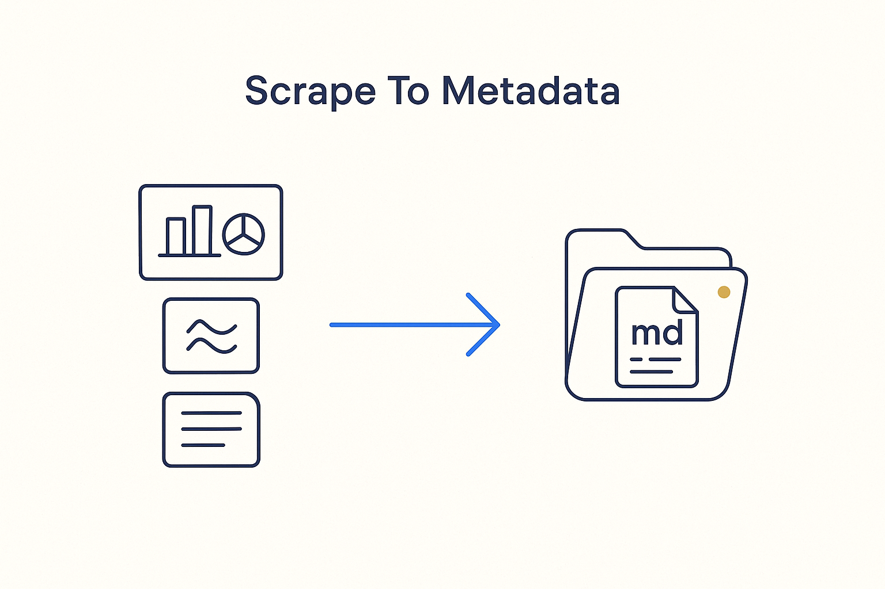

Turn existing business information — hidden in PowerPoints, Confluence, documents — into metadata files: markdown with frontmatter, organized folder-per-unit with folder notes.

> Turn existing business information — hidden in PowerPoints, Confluence, documents — into metadata files: markdown with frontmatter, organized folder-per-unit with folder notes.
The first move of the pipeline is capture. A company’s knowledge already exists, but it’s scattered and locked in formats no machine can reason over: PowerPoint decks, Confluence pages, Word documents, spreadsheets, emails. Scrape-to-metadata is the disciplined act of pulling that information out and re-expressing it as metadata files — markdown with frontmatter — organized folder-per-unit, each with a folder note. What was a slide becomes a structured, addressable unit; what was tribal becomes queryable.
The format matters. Markdown carries the human-readable text; the frontmatter carries the machine-readable metadata (type, source, owner, tags, relationships). Folder-per-unit with a folder note gives every idea a home you can link to, version and enrich — the same convention used for concepts and articles. It is deliberately boring and deliberately consistent, because consistency is what lets everything downstream — the mirror, the AI enrichment, the brain — actually work.
This is where raw reality enters the pipeline and becomes metadata first. It pairs with analyzing the existing SQL: documents and code are both input, both converted to one standard metadata format before anything smart happens on top.
Where it lives: the method layer of Breakthrough Modeling — buried documents, captured as structured metadata.